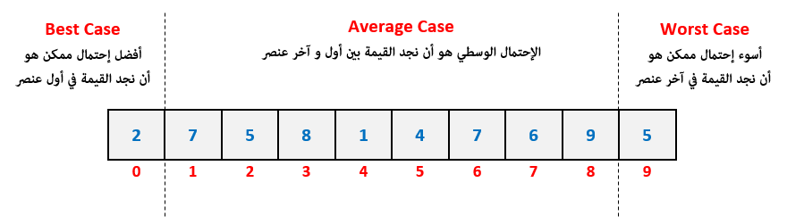

Algorithms & Data Structureالتعقيد ( Complexity )
مفهوم التعقيد ( Complexity )
في البداية, إذا قمت بدراسة و فهم جميع التحديات السابقة الموضوعة في الدورة فكن على يقين أنك وصلت لمرحلة متقدمة جداً و أنك أصبحت قادر على حل أي مسألة برمجية تمر معك مهما كانت معقدة. الشيء الأخير الذي بقي عليك معرفته هو كيفية قياس أداء الخوارزميات التي تقوم بكتابتها مما يساعدك في تحسين أداء برامجك لأقصى حدود ممكنة. فمثلاً في حال كنت تستطيع أداء المطلوب منك بأكثر من طريقة ستصبح قادر على معرفة ما هو الحل الأفضل بينهم.
معنى كلمة Complexity بشكل عام هو تقدير أداء الخوارزميات بهدف معرفة ما إن كانت فعالة أم لا, و لمعرفة ما هي أفضل خوارزمية يجب استخدامها في حال كان يوجد عدة طرق لأداء المطلوب.
عند قياس أداء الخوارزمية فإننا ننظر للمساحة التي تحتاجها من الذاكرة ( Space Complexity ) و الوقت الذي تستغرقه للإنتهاء ( Time Complexity ).
في وقتنا الحالي أصبحنا نركز فقط على الوقت الذي تستغرقه الخوارزمية حتى تتنفذ لأن ذاكرات الأجهزة ( RAMs ) أصبحت كبيرة جداً و لا تشكل أي عائق بالنسبة للمبرمجين كما كانت قديماً. لهذا أصبح تركيز المبرمجين ينصب بشكل خاص على حساب الوقت الذي تستغرقه الخوارزمية حتى تتنفذ و ليس على المساحة التي تحتاجها.
حساب الوقت الذي تحتاجه الخوارزمية حتى تتنفذ ( Time Complexity )
عندما نقوم بتقدير الوقت الذي تحتاجه الخوارزمية حتى تتنفذ فإننا دائماً نهتم بمعرفة أسوء إحتمال ممكن أن يحدث, أي أطول فترة قد تستغرقها الخوارزمية حتى تتنفذ.
أي لا تفكر أبداً بتعليق آمالك على أفضل نتائج ممكن أن تحدث و تقول إن شاء الله لا يحدث الأسوء, بل بالاساس أكتب كودك بأفضل طريقة ممكنة حتى تتجنب حدوث الإحتمالات السيئة.
لتوضيح ما نقصده بالإحتمالات السيئة, تخيل أننا تتعامل مع مصفوفة فيها مليون رقم و نريد البحث فيها لنعرف ما إن كانت تملك الرقم 10 أم لا.
هنا عندنا ثلاث إحتمالات للمكان الذي قد نجد فيه الرقم المراد البحث عنه:
قد نجد الرقم الذي نبحث عنه في أول عنصر في المصفوفة, و هذا يعتبر أفضل إحتمال ( Best Case ) ممكن لأننا لن نضطر إلى متابعة البحث.
قد نجد الرقم الذي نبحث عنه قبل الوصول لآخر عنصر فيها, و هذا يعتبر الإحتمال الوسطي ( Average Case ) لأننا لم نضطر إلى المرور على جميع العناصر.
قد نجد الرقم الذي نبحث عنه في آخر عنصر في المصفوفة, و هذا يعتبر أسوء إحتمال ( Worst Case ) ممكن لأننا سنضطر إلى المررور على جميع العناصر الموضوعة قبله.
كما سبق و قلنا, عند تقدير وقت تنفيذ الخوارزمية فإننا لا ننظر لأفضل إحتمال ممكن أو للإحتمال الوسطي بل ننظر لأسوء إحتمال ممكن.
و هنا أسوء إحتمال ممكن هو أن نضطر للمرور على المليون عنصر و نشيّك على قيمهم حتى نعرف ما إن كانت القيمة التي نبحث عنها موجودة أم لا.
الفرق بين الرموز المستخدمة لتقييم أداء الخوارزمية
في عالم البرمجة, نستخدمها الرموز التالية لتقييم أداء عمل الخوارزمية:
تقدير وقت أفضل إحتمال ممكن يرمز له بالرمز Ω و يقال له Omega Notation.
تقدير وقت الإحتمال الوسطي يرمز له بالرمز Θ و يقال له Theta Notation.
تقدير وقت أسوء إحتمال ممكن يرمز له بالرمز Ο و يقال له Big O Notation.
O إختصار لكلمة Order و بالتالي يمكنك قراءتها أيضاً Big Order Notation.
بما أننا لا نهتم بمعرفة أفضل الإحتمالات الممكنة و الإحتمال الوسطية فإننا لا نهتم بتاتاً الـ Omega Notation و الـ Omega Notation.
و بما أننا نهتم فقط بمعرفة أسوء الإحتمالات الممكنة فإننا نركز على حساب الـ Big O Notation دون سواها.
مثال
إذا فرضنا أننا كنا نريد البحث عن قيمة معينة بداخل مصفوفة و كنا قد بدأنا عملية البحث من أول عنصر فيها فالإحتمال الأفضل, الوسطي, و الأسوء سيكونوا كالتالي.

إذاً أسوء إحتمال ممكن هنا هو أن نضطر إلى الوصول لآخر عنصر في المصفوفة أثناء البحث لأن ذلك سيتطلب المرور على جميع العناصر السابقة.
و بالتالي هنا حساب الـ Big O Notation سيكون مرتكزاً على تقدير الوقت الذي نحتاجه للوصول لآخر عنصر في المصفوفة لأن هذا أسوء إحتمال ممكن.
الخطوات التي يتم حسابها ضمن الوقت الذي تستغرقه الخوارزمية
في البداية من المهم جداً معرفة أن حجم الكود و ترتيبه لا علاقة له بالمدة التي يحتاجها حتى يتنفذ.
أي قد تكتب كود يتألف من 5 أسطر يحتاج وقت ليتنفذ أكثر من كود يتألف من 100 سطر كما في المثال التالي.
# "Hello World" الأوامر الخمسة التالية مهمتها فقط طباعة الجملة
print('Hello World')
print('Hello World')
print('Hello World')
print('Hello World')
print('Hello World')
# مليون مرة لذا من الطبيعي أن يستغرق تنفيذه وقت أطول من الأوامر الخمسة السابقة "Hello World" الحلقة التالية مهمتها طباعة عبارة
for i in range(0, 1000000):
print('Hello World')
# إذاً عدد أسطر الكود ليس له علاقة بالمدة التي يحتاجها حتى يتنفذ
public class Main {
public static void main(String[] args) {
// "Hello World" الأوامر الخمسة التالية مهمتها فقط طباعة الجملة
System.out.println("Hello World");
System.out.println("Hello World");
System.out.println("Hello World");
System.out.println("Hello World");
System.out.println("Hello World");
// مليون مرة لذا من الطبيعي أن يستغرق تنفيذه وقت أطول من الأوامر الخمسة السابقة "Hello World" الحلقة التالية مهمتها طباعة عبارة
for (int i = 0; i < 1000000; i++)
{
System.out.println("Hello World");
}
// إذاً عدد أسطر الكود ليس له علاقة بالمدة التي يحتاجها حتى يتنفذ
}
}
using System;
class Program
{
static void Main(string[] args)
{
// "Hello World" الأوامر الخمسة التالية مهمتها فقط طباعة الجملة
Console.WriteLine("Hello World");
Console.WriteLine("Hello World");
Console.WriteLine("Hello World");
Console.WriteLine("Hello World");
Console.WriteLine("Hello World");
// مليون مرة لذا من الطبيعي أن يستغرق تنفيذه وقت أطول من الأوامر الخمسة السابقة "Hello World" الحلقة التالية مهمتها طباعة عبارة
for (int i = 0; i < 1000000; i++)
{
Console.WriteLine("Hello World");
}
// إذاً عدد أسطر الكود ليس له علاقة بالمدة التي يحتاجها حتى يتنفذ
}
}
#include <iostream>
int main() {
// "Hello World" الأوامر الخمسة التالية مهمتها فقط طباعة الجملة
std::cout << "Hello World\n";
std::cout << "Hello World\n";
std::cout << "Hello World\n";
std::cout << "Hello World\n";
std::cout << "Hello World\n";
// مليون مرة لذا من الطبيعي أن يستغرق تنفيذه وقت أطول من الأوامر الخمسة السابقة "Hello World" الحلقة التالية مهمتها طباعة عبارة
for (int i = 0; i < 1000000; i++)
{
std::cout << "Hello World\n";
}
// إذاً عدد أسطر الكود ليس له علاقة بالمدة التي يحتاجها حتى يتنفذ
return 0;
}
#include <stdio.h>
void main() {
// "Hello World" الأوامر الخمسة التالية مهمتها فقط طباعة الجملة printf("Hello World\n");
printf("Hello World\n");
printf("Hello World\n");
printf("Hello World\n");
printf("Hello World\n");
// مليون مرة لذا من الطبيعي أن يستغرق تنفيذه وقت أطول من الأوامر الخمسة السابقة "Hello World" الحلقة التالية مهمتها طباعة عبارة
for (int i = 0; i < 1000000; i++)
{
printf("Hello World\n");
}
// إذاً عدد أسطر الكود ليس له علاقة بالمدة التي يحتاجها حتى يتنفذ
}
كيفية حساب عدد خطوات الخوارزمية ( Step Execution )
إذا كنا سنحسب عدد خطوات تنفيذ الخوارزمية السابقة, سنقول: 1000,000 + 5 لأنها أوامر الطباعة التي سيتم تنفيذها.
الجواب هو: 1000,005 خطوة.
ملاحظة
نحن لن نقوم بحساب عدد الأوامر التي سيتم تنفيذها عند تشغيل الخوارزمية, بل سندرس طريقة كتابة الخوارزمية.
بالإجمال, الشكل العام لكتابة الخوارزمية هو ما سنعتمد عليه لتقدير الوقت الذي تحتاجه حتى تتنفذ.
إذاً حساب عدد الأوامر ( Step Execution ) التي ستتنفذ من بداية لنهاية الخوارزمية لا يهمنا.
بل يهمنا فقط معرفة كيف يتم تقدير أكبر وقت قد تحتاجه الخوارزمية حتى تتنفذ ( Big O Notation ).
كيفية تقدير أطول مدة قد يستغرقها تنفيذ الكود ( Big O Notation )
عند حساب الـ Big O Notation لا نقوم بقراءة كل أمر موضوع في الكود و نحسب الوقت الذي سيتنفذ خلاله كما نفعل في حال كنا نريد حساب عدد خدوات تنفيذ الخوارزمية, بل نهتم فقط نهتم فقط بالكود الذي سيتم تنفيذه أكثر من مرة. أي يهمنا:
الكود الموضوع بداخل حلقة ( Loop ).
الكود الموضوع بداخل عدة حلقات متداخلة ( Nested Loops ).
الكود الموضوع بداخل دالة تستدعي نفسها ( Recursive Function ).
إذا كنا سنكتب الـ Big O Notation لخوارزمية المثال السابق فإننا سنتجاهل كل أوامر الطباعة و نركز على الحلقة التي تحتوي على أمر الطباعة.
لذا سيتم تقدير الوقت الذي تحتاجه الخوارزمية بالمعادلة: O(1).
الرقم 1 هنا لا يمثل قيمة فعلية بل يقصد به أننا نعرف كم مرة بالضبط ستتنفذ الأوامر الموضوعة في الحلقة.
في الدروس القادمة سنتعرف على أنواع الـ Big O Notation و كيف يتم مقارنتها, بالإضافة إلى كيفية عرض الوقت الذي تستغرقه الخوارزمية حتى تتنفذ.


 محرر الويب
محرر الويب نظام الألوان
نظام الألوان محول الوحدات
محول الوحدات محلل عناوين الشبكات
محلل عناوين الشبكات